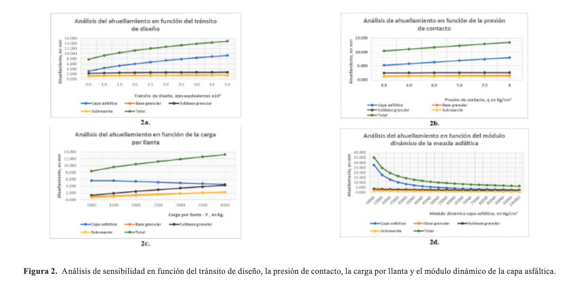

Introduction
La deformación plástica permanente o ahuellamiento es causada por el exceso de tránsito o cargas, bajas velocidades
de circulación, deficiencias en el diseño y construcción de las mezclas asfálticas, variaciones drásticas de
temperatura y presencia de humedad y subrasantes débiles. [1][2][3]
La malla vial de Colombia está construida predominante con pavimento flexible, según estadísticas del Ministerio de
Transporte para el año 2019, nuestro país cuenta con 205,378 Km de red vial. Cifras de la red vial a cargo del
Instituto Nacional de Vías – INVIAS del año 2020, aproximadamente el 47.42% de la red vial presenta deterioros y
varios daños representativos lo cual disminuye su vida de servicio considerablemente y el 52.58% de la red está en
muy bueno y buen estado. Los daños de la red vial son debidos a deficiencias en los diseños, fallas en los procesos
constructivos, excesos de humedad de los materiales y sobrecargas que afectan la capacidad y durabilidad a las
estructuras de pavimento. [4]
A su vez en el control de diseño de una estructura de pavimento es importante conocer el valor de la deformación
plástica esperada o ahuellamiento con el objeto de asegurar un buen desempeño estructural y funcional.[5]
Por lo anteriormente enunciado, la presente investigación tiene como objetivo evaluar el comportamiento de la
deformación plástica mediante la implementación de metodologías mecanicistas y analizar el grado de sensibilidad de
las variables que intervienen en su cuantificación, de manera que las estructuras de pavimento flexible que se
diseñen cumplan el criterio de control de deformación o ahuellamiento.
En la Figura 1a se representa el modelo reológico desarrollado por Burgers. Cuando una carga pasa sobre la
estructura del pavimento se produce inicialmente una deformación elástica, seguida de una deformación viscoelástica
y una vez la carga es retirada el pavimento se recupera mediante la componente elástica y la componente plástica
permanece y va aumentando con el paso de las cargas del tránsito, dando lugar al fenómeno del ahuellamiento, el cual
se manifiesta en la superficie de la capa asfáltica mediante la formación de huellas, surcos o roderas. [6] [7] [8] [9]
Las causas del ahuellamiento [6] de los pavimentos flexibles están asociados al clima (altas temperaturas de
servicio
del pavimento), a las cargas del tránsito, el tipo de asfalto, la granulometría de la mezcla asfáltica, las
características de los materiales, las propiedades volumétricas de la mezcla, las deficiencias en la compactación de
las capas, la debilidad de la subrasante y errores en el diseño y construcción de la mezcla asfáltica.
Los factores que afectan el ahuellamiento y la deformación plástica permanente [6][10][11] de las estructuras de pavimento flexible son: el espesor de las
capas, los módulos de elasticidad, el grado de ligante de la mezclas, el
contenido efectivo de ligante de las capas asfálticas, la temperatura y las condiciones ambientales, las cargas del
tránsito, el área y la presión de contacto de las llantas, la velocidad de operación de los vehículos, las
propiedades volumétricas de la mezcla, el grado de humedad de las capas de base, subbase y subrasante, la
profundidad del estrato portante y la profundidad del nivel freático.
Las etapas del proceso de evolución de la deformación plástica permanente o ahuellamiento en capas asfálticas [6]
[12][13], se presenta en tres etapas: la primera etapa es la densificación que
produce un cambio de volumen, alta
velocidad de deformación y alta deformación o ahuellamiento, la segunda etapa se caracteriza por bajos cambios de
volumen y la velocidad de deformación es constante y la tercera etapa se denomina deformación por flujo plástico por
corte y se caracteriza por una baja velocidad de deformación, alta deformación y no hay cambios de volumen.
Los tipos de deformación plástica o ahuellamiento se clasifican en: deformación en las capas asfálticas, ocurre
cuando la resistencia al corte es demasiado baja para soportar los esfuerzos producidos por el tránsito y el perfil
de ahuellamiento ocurre en la capa asfáltica y su esquema se presenta en la Figura 1b. El segundo tipo de
deformación es el ahuellamiento en la subrasante el cual se presenta por falla de la subrasante y se genera por la
aplicación repetida de esfuerzos de compresión al suelo de subrasante, la subbase o la base y su perfil se presenta
en la Figura 1b. Frecuentemente, la deformación o ahuellamiento es el resultado de estructuras con espesores de
capas muy delgadas que influyen en la disipación de los esfuerzos y deformaciones verticales de compresión y que
deforman la subrasante. También, influye en el ahuellamiento las deficiencias en el proceso de compactación de las
capas y la variación de los niveles de humedad. En este tipo el ahuellamiento se presenta en mayor magnitud en la
subrasante, seguida de la base y subbase granular y finalmente en las capas asfálticas. [6][13]
Materiales y Métodos
La metodología para la realización de la investigación contempló siete etapas: Revisión bibliográfica, diseño
estructural, chequeo y cálculo de la deformación plástica o ahuellamiento de la estructura, variables a estudiar,
análisis de sensibilidad, definición de las variables más sensibles y significativas y el análisis de resultados.
A continuación, se presenta el modelo de deformación plástica propuesta en la guía “Mechanistic-Empirical Pavement
Design Guide – MEPDG-AASHTO” versiones 2008 y 2015. [15][16]
El modelo propuesto por la guía MEPDG-AASHTO [15][16][21][22], para determinar la deformación o plástica permanente
de la capa asfáltica se presenta en la Ecuación (1).
Donde:
Δp(CA): Deformación plástica permanente acumulada en la capa asfáltica, en pulgadas.
εv(CA): Deformación vertical calculada en la mitad de la capa asfáltica, en pulgada/pulgada.
hCA: Espesor de la capa asfáltica, en pulgadas.
n: Número de repeticiones de carga.
T: Temperatura de trabajo de la mezcla asfáltica, Tmix en grados Fahrenheit.
K1r – K2r – K3r: Parámetros de calibración global de campo.
β1r – β2r – β3r: Constantes locales de calibración o de la mezclas en el campo.
Kz:Factor de corrección en función del espesor de la capa asfáltica, se estima mediante la Ecuación (2).
Donde:
Depth: Profundidad media de la capa asfáltica, en pulgadas.
C1 y C2: factores de corrección del espesor, se estiman con las Ecuaciones (3) y (4).
El modelo propuesto por la guía MEPDG-AASHTO [15][16][21][22], para determinar la deformación plástica de las capas granulares de base y subbase se
presenta en la Ecuación (5).
Donde:
Δp(granular): Deformación plástica permanente, en pulgadas.
βs1: Constantes de calibración global para el ahuellamiento en las capas no ligadas.
Ks1: Coeficientes de calibración global.
εv: Deformación vertical en la mitad de la capa granular determinada por el modelo de análisis estructural, en pulgada/pulgada
h(granular): Espesor de la capa granular no ligada, en pulgadas
n: Número de repeticiones de carga.
εo: Intersección determinada de los ensayos de deformación permanente de carga repetida de laboratorio, en pulgada/pulgada
εr: Deformación elástica determinada en la prueba de laboratorio para obtener las propiedades del material, que depende de los parámetros: εo, β y ρ.
εo, β y ρ: Propiedades del material.
El parámetro β se estima por medio de la Ecuación (6):
Donde:
Wc: Contenido de humedad del material, en porcentaje - %
Cuando no se tienen la humedad del material se puede calcular por medio de la Ecuación (7):
Donde:
Mr: Módulo de elasticidad de la capa, en lb/pulg2
Gwt: Profundidad del nivel freático, en pies
El parámetro p se calcula por medio de la Ecuación (8):
Finalmente, la relación (εo/εr) se calcula por medio de la Ecuación (9):
El modelo propuesto por la guía MEPDG-AASHTO [15][16][21][22], para estimar la deformación plástica permanente en la subrasante se presenta en la Ecuación (10):
Donde:
εp(z): Deformación vertical plástica a la profundidad z
k: Parámetro que se estima por medio de la Ecuación (11).
Para calcular la deformación de la subrasante para cada profundidad (z=0 y z=6 pulgadas), se aplica la Ecuación (12).
Donde:
εv: Deformación unitaria vertical en la subrasante calculada por el modelo de respuesta estructural, en pulgada/pulgada
Ks1: Coeficiente de calibración global
βs1: Constante de calibración local
La deformación permanente total de la subrasante se determina sumando las deformaciones plásticas hasta la
profundidad del estrato portante por medio de la Ecuación (13).
Donde:
Δp(SR): Deformación plástica total de la subrasante, en pulgadas
hroca: Profundidad a la que se encuentra el estrato rocoso, en pies.
El diseño de la estructura de referencia de pavimento flexible se realizó de acuerdo a la metodología de la AASHTO-93
[14] y su modelo estructural se presenta en la Figura 1c.
Aplicando la metodología propuesta por la guía MEPDG-AASHTO [15-23] se calculó la deformación plástica acumulada o
ahuellamiento de cada capa y del modelo estructural, la fisuración piel de cocodrilo y la fisuración longitudinal de
la capa asfáltica, también se determinó el índice de rugosidad. Se revisó que la estructura diseñada cumpla los
criterios de desempeño y el índice de rugosidad, tal como se muestra en la Tabla I.
Las variables para el análisis de sensibilidad de la deformación plástica, su rango, variación y número de
alternativas a evaluar se indican en la Tabla II.
Resultados y Discusión
La deformación plástica o ahuellamiento de la estrutura de referencia de pavimento flexible, determinado de acuerdo a
la MEPDG-AASHTO [15] [16] se muestra en la Figura 1d. La magnitud de la
deformació plástica o ahuellamiento en la estructura es de 10.52 mm, de los cuales la capa asfáltica presenta un
ahuellamiento de 5.355 mm (50.91%), la capa de base granular 1.408 mm (13.39%), la capa de subbase granular 2.499 mm
(23.75%) y la subrasante 1.258 mm (11.95%). La estructura presenta un ahuellamiento total menor de 13 mm la cual
cumple con el criterio de aceptación de la guía de diseño. Del análisis de la curva de desempeño de la deformación
plástica, ver Figura 1d, se deduce que el 71.75% de la deformación plástica total ocurre en los primeros 5 años de
servicio del pavimento, el 15.67% de la deformación plástica total ocurre entre los años 5 y 10 de servicio y el
12.58% restante ocurre entre los años 10 y 15 de servicio.
Análisis de sensibilidad de la deformación plástica de la estructura de referencia. En cuanto el tránsito de
diseño, este influye de manera directa en la deformación plástica y su magnitud está en función directa con la
intensidad del tránsito tal como se aprecia en la la Figura 2a, siendo la capa asfáltica la que presenta la mayor
deformación plástica, seguida de la capa de subbase, la capa de base y la subrasante. Es importante resaltar que la
mayor deformación plástica de la estructura de pavimento flexible (7.779mm) ocurre cuando la estructura soporta los
primeros 500,000 ejes equivalentes de 8.2 t, a mayor tránsito la tasa de deformación plástica se hace menor.

Para el modelo de referencia en estudio, la influencia de la presión de contacto y la carga por llanta influyen
directa en la deformación plástica o ahuellamiento, siendo la capa asfáltica la que presenta la mayor deformación,
seguida de la capa de subbase granular y la capa de base y la subrasante se deforma de manera similar tal como se
observa en las Figuras 2b y 2c.
En cuanto a los módulos de las capas influyen de manera directa en la magnitud de la deformación plástica y se
cumple que a medida que se incrementa el valor se disminuye la magnitud de la deformación plástica, siendo el más
sensible el módulo dinámico de la capa asfáltica, seguido del módulo resiliente de la subbase, base y subrasante,
tal como se aprecia en las Figuras 2d, 3a, 3b y 3c.
Los espesores de las diferentes capas del pavimento flexible influyen en la estmación de la deformación plástica de
cada una de las capa. Para la estructura de referencia se obtuvo que un aumento en el espesor de la capa asfáltica
influye de manera inversa en la magnitud de la deformación plástica y este mismo comportamiento se presenta en la
capa de base granular, tal como se muestra en las Figuras 3d y 4a. En cambio, para la capa de subbase granular el
comportamiento de la deformación es un poco atípico debido a que se presentó el caso que a medida que se incrementa
el espesor de la capa de subbase granular se incrementa el ahuellamiento aunque su magnitud es muy baja, ver Figura
4b.
La temperatura media anual ponderada del aire - TMAP y la temperatura del pavimento – Tmix, influyen directamente en
la magnitud de la deformación plástica de las capas asfálticas, tal como se muestra en la Figura 4c, debido al
cambio de viscosidad del asfalto haciendo que la mezcla asfáltica se deforme por la pérdida de resistencia. En
cambio, el ahuellamiento de las capas granulares y la subrasante no ven afectados por el cambio de temperatura.
Para la estructura de referencia, la variación de la humedad de las capas de base, subbase y subrasante son poco
sensibles a los cambios de la deformación plástica, tal como se indica en las Figuras 4d, 5a y 5b.
La profundidad del estrato rocoso influye directamente en la deformación plástica o ahuellamiento de la estructura
de pavimento flexible, de manera que a mayor profundidad del estrato rocoso es mayor el ahuellamiento de la
estructura del pavimento, ver Figura 5c. La profundidad del nivel freático es poco sensible a la deformación
plástica, ver Figura 5d.
El grado de sensibilidad se determinó en función del porcentaje de variación de cada variable, ver Tabla III, de
manera que, si dicho porcentaje es menor al 15% la variable es de sensibilidad baja, si su porcentaje de variacion
está entre el 15% y 30% la variable es de sensibilidad media y si la variación es mayor del 30% la sensibilidad es
alta.[23][24]
Los modelos de comportamiento de la deformación plástica o ahuellamiento obtenidos del análisis de sensibilidad se
presentan en la Tabla IV. Los modelos obtenidos estiman el valor del ahuellamiento total de la estructura de
pavimento flexible de referencia.
Conclusiones
Como resultados del análisis de sensibilidad de la deformación plástica o ahuellamiento para la estructura de
pavimento flexible de referencia, se muestra en la Tabla V.
- La variable más sensible es la temperatura - TMAP, seguida del tránsito de diseño, el módulo dinámico de la mezcla
asfáltica, la carga por llanta y el espesor de la capa asfáltica; estas variables presentan un grado de sensibilidad
ALTA. Las variables: presión de contacto y profundidad del estrato portante presentan un grado de sensibilidad
MEDIA. Las variables: módulo resiliente de la subbase granular, humedad de la subrasante, humedad de la capa de
subbase granular, módulo resiliente de la base granular, Espesor de la capa se subbase granular, módulo resiliente
de la subrasante, profundidad del nivel freático, humedad de la capa de base granular y espesor de la capa de base
granular, presentan un grado de sensibilidad BAJA.
De acuerdo al análisis realizado se destaca los siguientes comportamientos:
- A medida que se incrementa la temperatura media anual ponderada – TMAP °C, el ahuellamiento de la capa asfáltica
aumenta significativamente, en cambio el ahuellamiento de las capas de base, subbase y subrasante permanece
constante. Lo anterior, permite afirmar que el incremento de la TMAP trae consigo un incremento de la deformación
plástica o ahuellamiento de las capas asfálticas.
- El comportamiento del ahuellamiento de la capa asfáltica, para el rango de espesores entre 4 cm a 12 cm, el
ahuellamiento se incrementa y para espesores mayores a 12 cm hasta 20 cm el ahuellamiento disminuye, luego el
comportamiento del ahuellamiento de la capa asfáltica tiene forma de parábola.
- Para el rango de módulos dinámicos de la capa asfáltica entre 10,000 Kg/cm2 y 30,000 Kg/cm2, la disminución de la
magnitud del ahuellamiento es significativa, para valores mayores de 30,000 Kg/cm2 el cambio de la magnitud del
ahuellamiento es menor. Lo anterior indica que para módulos dinámicos bajos la magnitud de la deformación plástica o
ahuellamiento es alta.
- El comportamiento de la capa asfáltica ante los cambios de espesor y módulo dinámico son significativos, lo cual
permite afirmar que se debe escoger el espesor y el módulo dinámico apropiado con el fin de controlar la magnitud de
la deformación plástica.
Se recomienda para futuros estudios realizar análisis comparativos de la deformación plástica o ahuellamiento
utilizando el tránsito equivalente y los espectros de carga, además es importante para Colombia iniciar los estudios
de calibración del modelo de deformación plástica o ahuellamiento para las condiciones propias del país.
Agradecimientos
El autor agradece a la Universidad Pedagógica y Tecnológica de Colombia por el otorgamiento del periodo sabático y
el acompañamiento durante la realización de esta investigación.
References
[1] G. Thenoux, y O. Carrillo, Análisis de casos de ahuellamiento en mezclas asfálticas chilenas. Santiago, Chile, 2002.
[2] D. Páez, y H. Pereira, Estudio de ahuellamiento en mezclas asfálticas. Universidad de los Andes. Bogotá. Colombia, 2001.
[3] L. Parra, y J. Pedroza, “Estudio sobre el efecto de la granulometría en la resistencia al ahuellamiento de mezclas asfálticas, Ingenio Magno, vol. 6, no.1, pp. 112-127, 2015.

 MSc. en Ingeniería,
carlos.higuera@uptc.edu.co.
MSc. en Ingeniería,
carlos.higuera@uptc.edu.co.
 ORCID:
0000-0003-1333-2517.
Universidad de Pedagógica y Tecnológica de Colombia, Colombia.
ORCID:
0000-0003-1333-2517.
Universidad de Pedagógica y Tecnológica de Colombia, Colombia.